Version 1
Original line illustrations (PNG)
Baseline: the four static line drawings from illustrations/original, as delivered. The reference every new set is compared against.
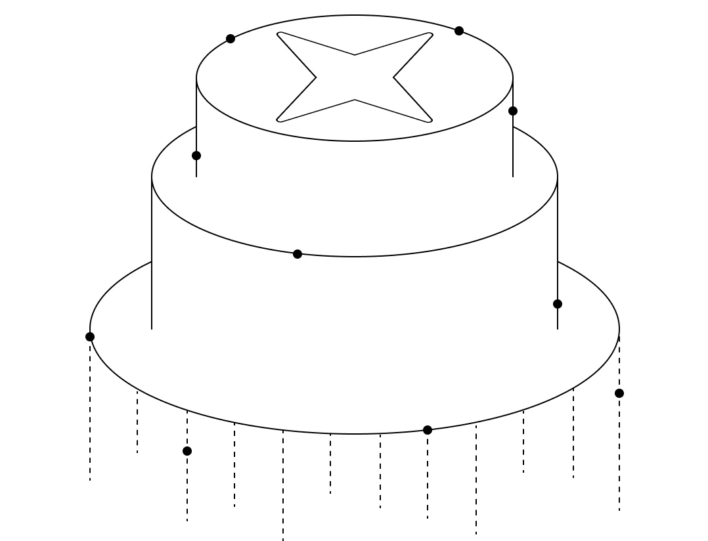
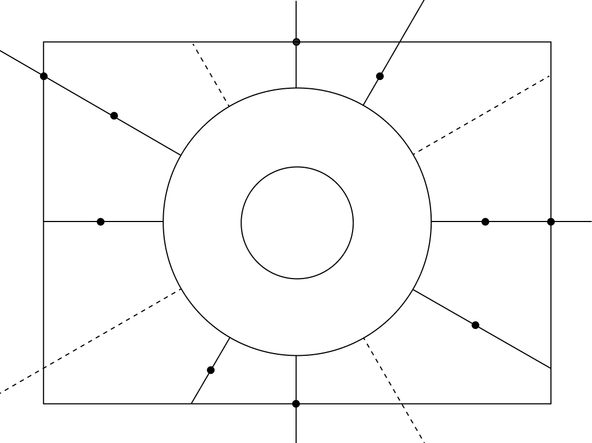
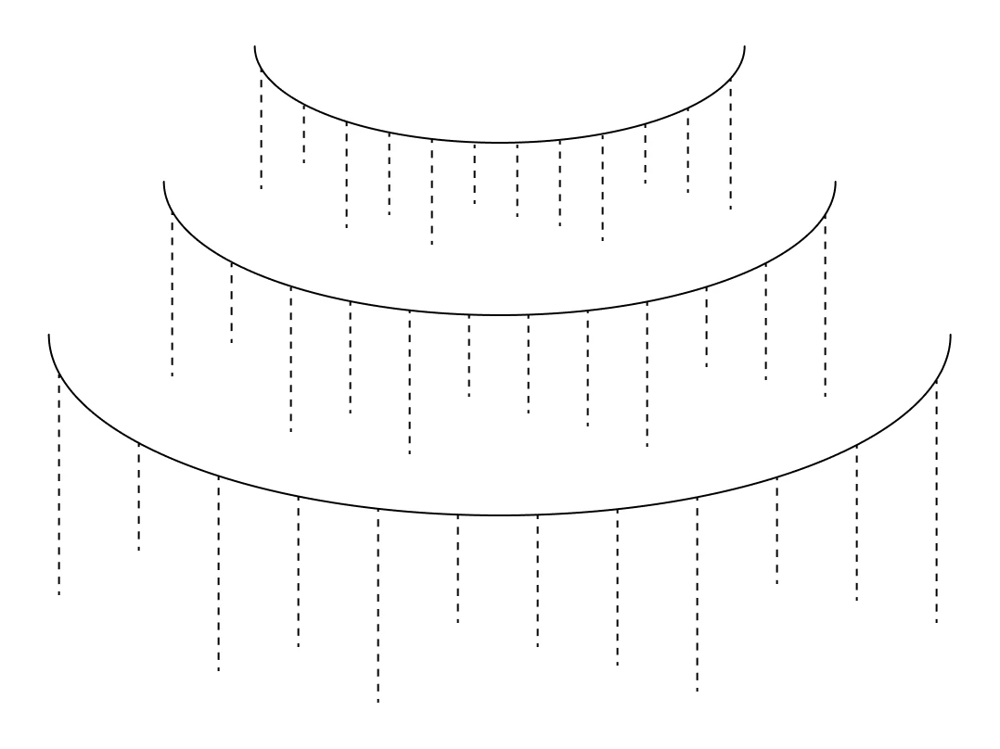
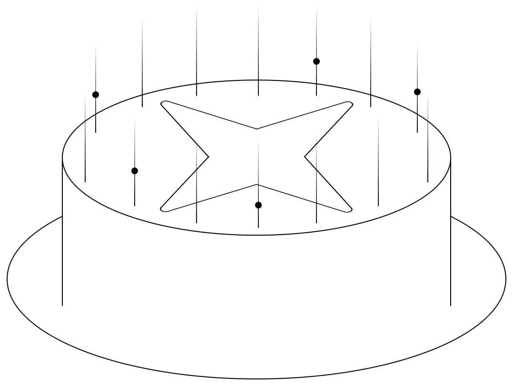
Unofficial prototype. Front-end design experiments by Hanzo exploring improvements to a client website. This is not an official page of the brand shown, it is not published or endorsed by them, and it is not a working product. Every outbound link is disabled, no data is collected and no third-party scripts run. All trademarks belong to their respective owners.
Baseline: the four static line drawings from illustrations/original, as delivered. The reference every new set is compared against.




George's full cake animation (cake-ascent-30s) cut into chapters, one per slot. Hero: the whole 30 s on the dark hero. Step 1 (0-10 s): the data point and data frame. Step 2 (10-17 s): the layers stacking. Step 3 (17-23 s): the AI frosting dropping onto the top tier. Shortlist (23-30 s): the finished cake. Clips on white modules are colour-inverted in the file. Tuner: press T.
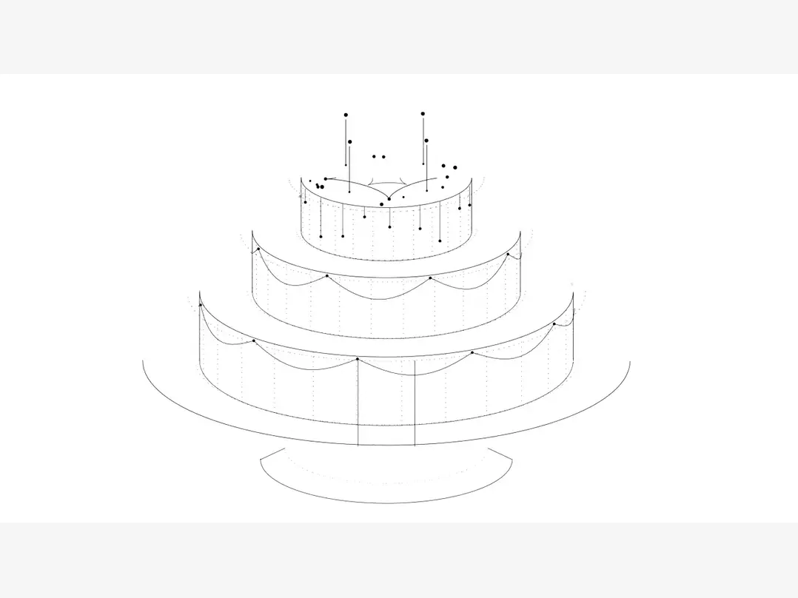
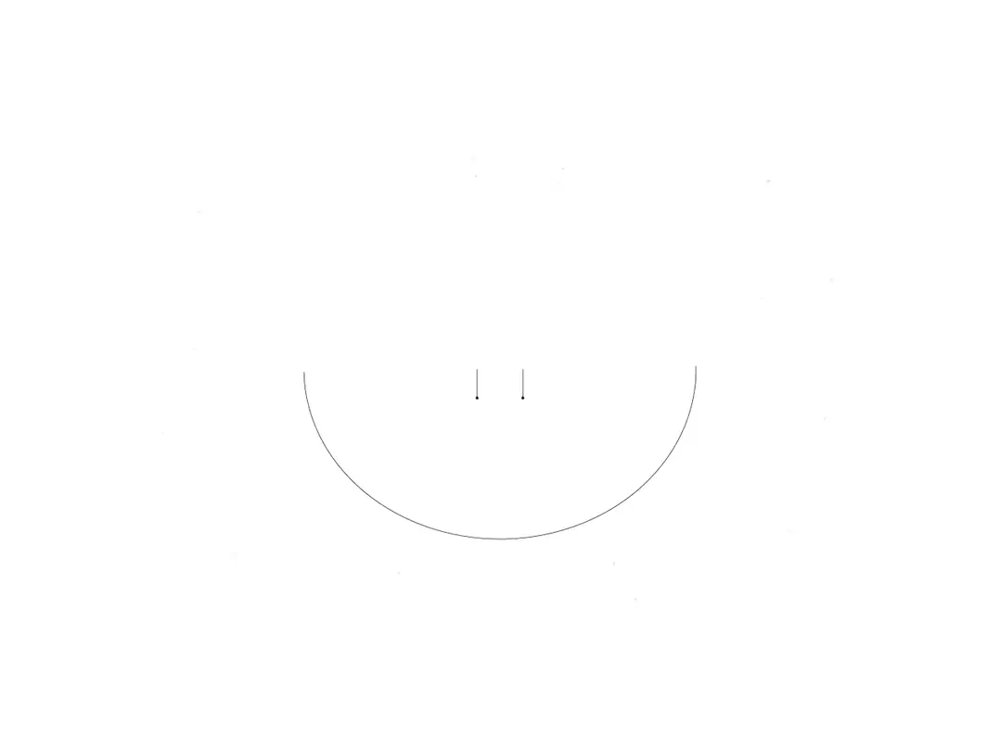
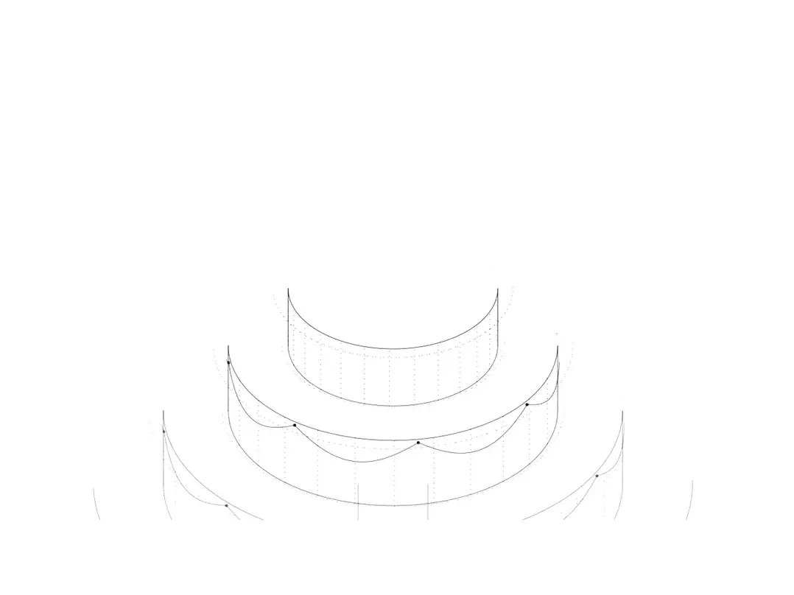
George's cake-ascent animation re-staged in WebGL with the Data Core glass. Hero: the whole loop on the dark hero. White modules, same scene inverted: the shortlist shows only the three tiers and the star; Step 1 draws the rings and data frame and undraws them in sequence; Step 2 builds the tiers as lines only (front halves of the cap rings, dotted walls, swags); Step 3 the top tier and the star with every detail. Tuner: press T.
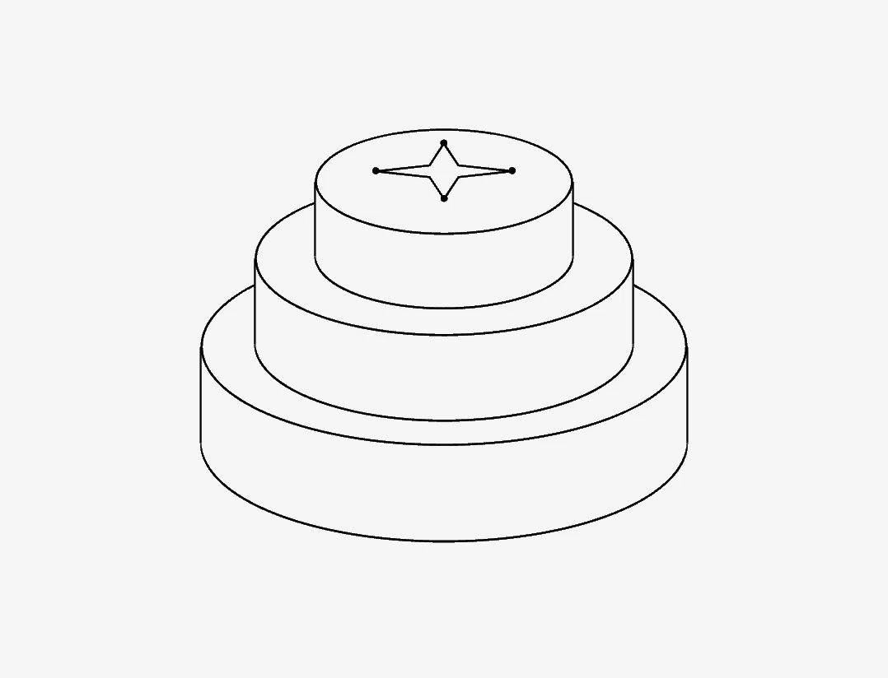
Same as Glass 3D, but the hero shows a still slice of cake in glass: three layers (base, middle, frosting) cut as a wedge, white line edges, dotted crust, a swag line with beads and the whipped cream and cherry of Igor's 3D model (0016.obj) in glass on top. Not animated: it turns with the mouse (gyroscope on phones), a hovered layer lifts and the cream bounces. The white modules are the Glass 3D ones. Tuner: press T.
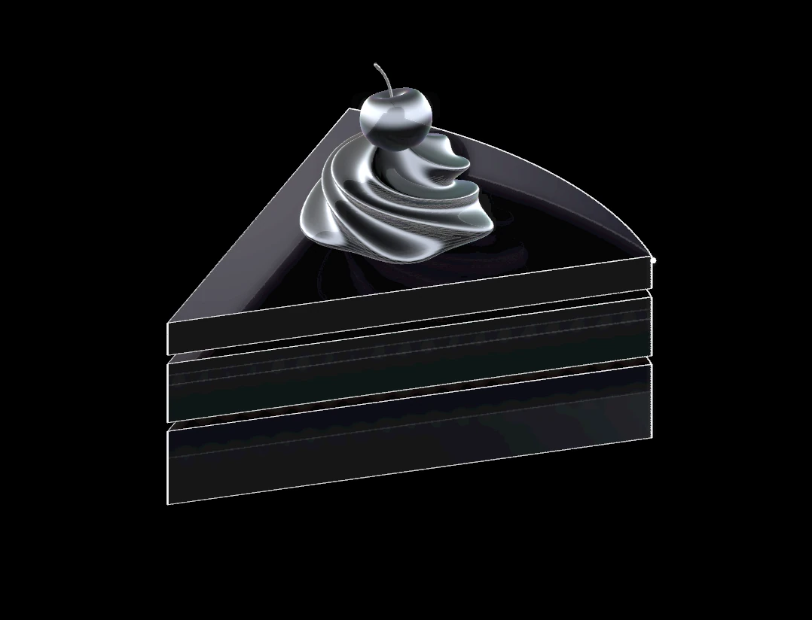
The four original line drawings rebuilt in 3D on their own measurements, animated like the glass versions, on the new M35 detail page hero. Hero: drawing 1 in black and white (white lines and beads, a flat black fill that only hides what is behind), still, turning with the mouse (gyroscope on phones); hover lifts the board or a tier, hover on the star spins it; the dashed drips flow. White modules, black line: the shortlist holds the same cake; Step 1 draws the data frame (rings, rays bead-first, frame) and undraws it in sequence; Step 2 lays the three rims one by one with their dashed drips, then drips them off; Step 3 builds board, tier and star and lets the frosting fall onto the top. Tuner: press T.
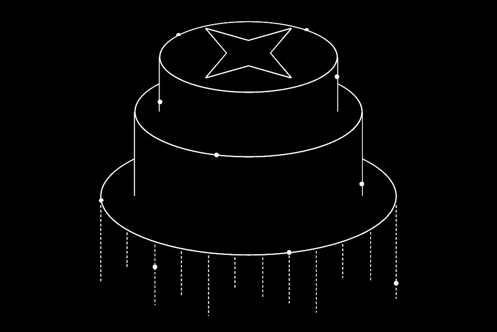
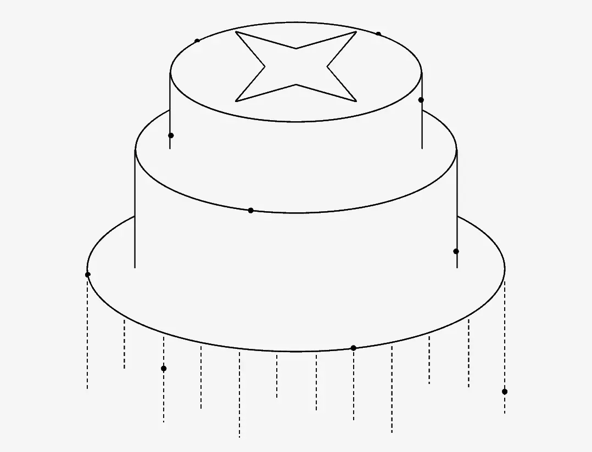